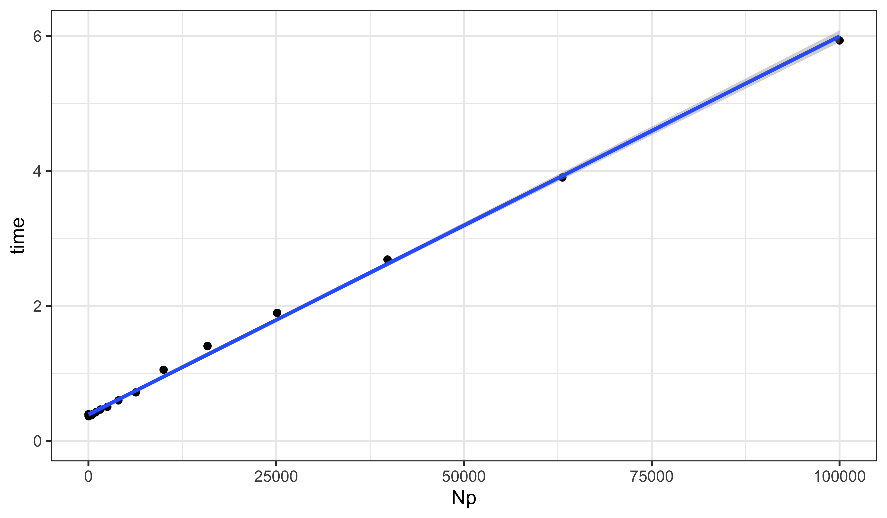
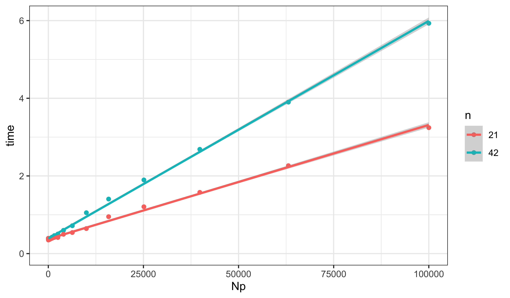

library(tidyverse)
library(pomp)
library(iterators)
library(doFuture)Worked solution to exercise 3.2: Computational complexity of the particle filter
Produced in R version 4.3.2.
Load packages:
Construct the pomp object for the Consett measles example
source("https://kingaa.github.io/sbied/pfilter/model.R")Now run particle filters of several sizes, measuring the amount of time elapses for each one.
expand_grid(
Np=ceiling(10^seq(1,5,by=0.2))
) -> design
plan(multisession)
foreach (
expt=iter(design,"row"),
.combine=bind_rows,
.options.future=list(seed=TRUE)
) %dofuture% {
system.time(measSIR |> pfilter(Np=expt$Np))[3] -> expt$time
expt
} -> resultAPlot the results and fit a line.
resultA |>
ggplot(aes(x=Np,y=time))+
geom_point()+
geom_smooth(method="lm",formula=y~x)+
expand_limits(x=0,y=0)
lm(time~Np,data=resultA) -> fit
summary(fit)
Call:
lm(formula = time ~ Np, data = resultA)
Residuals:
Min 1Q Median 3Q Max
-0.062130 -0.025747 -0.020232 -0.009805 0.126790
Coefficients:
Estimate Std. Error t value Pr(>|t|)
(Intercept) 3.902e-01 1.293e-02 30.19 <2e-16 ***
Np 5.603e-05 4.595e-07 121.93 <2e-16 ***
---
Signif. codes:
0 '***' 0.001 '**' 0.01 '*' 0.05 '.' 0.1 ' ' 1
Residual standard error: 0.05263 on 19 degrees of freedom
Multiple R-squared: 0.9987, Adjusted R-squared: 0.9987
F-statistic: 1.487e+04 on 1 and 19 DF, p-value: < 2.2e-16The computational expense scales linearly with the number of particles. In this case, we require about 56 μs per 1000 particles.
How does the computation scale with the length of the time series?
measSIR |>
window(end=21) -> shortMeasSIR
plan(multisession)
foreach (
expt=iter(design,"row"),
.combine=bind_rows,
.options.future=list(seed=TRUE)
) %dofuture% {
system.time(shortMeasSIR |> pfilter(Np=expt$Np))[3] -> expt$time
expt
} -> resultB
bind_rows(
long=resultA,
short=resultB,
.id="length"
) |>
mutate(
n=case_when(
length=="short"~length(time(shortMeasSIR)),
length=="long"~length(time(measSIR))
)
) -> resultresult |>
ggplot(aes(x=Np,y=time,group=n,color=factor(n)))+
geom_point()+
labs(color="n")+
geom_smooth(method="lm",formula=y~x)+
expand_limits(x=0,y=0)
lm(time~n*Np,data=result) -> fit
summary(fit)
Call:
lm(formula = time ~ n * Np, data = result)
Residuals:
Min 1Q Median 3Q Max
-0.07024 -0.02453 -0.01466 0.00344 0.12679
Coefficients:
Estimate Std. Error t value Pr(>|t|)
(Intercept) 3.618e-01 2.600e-02 13.918 < 2e-16 ***
n 6.757e-04 7.829e-04 0.863 0.39353
Np 2.715e-06 9.242e-07 2.938 0.00559 **
n:Np 1.269e-06 2.784e-08 45.603 < 2e-16 ***
---
Signif. codes:
0 '***' 0.001 '**' 0.01 '*' 0.05 '.' 0.1 ' ' 1
Residual standard error: 0.04734 on 38 degrees of freedom
Multiple R-squared: 0.9984, Adjusted R-squared: 0.9983
F-statistic: 8009 on 3 and 38 DF, p-value: < 2.2e-16The marginal cost is about 1.3 μs per 1000 particles per data-point.